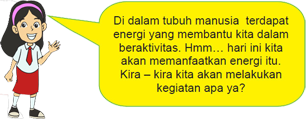

Pembelajaran 3
-

-
 Ayo Berlatih
Ayo Berlatih -
 Ayo Berkreasi
Ayo Berkreasi -
 Ayo Belajar
Ayo Belajar -
 Ayo Renungkan
Ayo Renungkan -
 Kerjasama dengan Orang Tua
Kerjasama dengan Orang Tua
Manusia juga mempunyai energi yang tersimpan di dalam tubuhnya. Nah, pagi ini Pak Tagor, Beni, dan kawan-kawannya bersiap-siap untuk melakukan kegiatan olahraga.

Lakukan latihan untuk menjaga kebugaran dengan cara latihan beberapa posisi.
Setelah selesai latihan, cari tahu apakah kegiatan yang kamu lakukan berhubungan
dengan perubahan energi. Isilah jawabanmu pada tabel berikut!

Seperti yang kita pelajari, semakin lama energi semakin habis. Untuk itu kita harus
menghemat energi, baik di rumah maupun di sekolah.

Buatlah sebuah poster yang bertema energi. Isi dari poster berupa ajakan untuk
menghemat energi. Ingatlah hal–hal yang perlu diperhatikan dalam membuat poster,yaitu:
• Fokus pada tema yang akan dibahas
• Pemilihan bahasa yang tepat dan ringkas
• Pemilihan warna dan gambar yang menarik
Setelah selesai, kamu dapat memajang postermu agar dapat dibaca oleh teman-
teman
lain di sekolah.
Selain untuk menghemat energi, kita harus mempersiapkan diri untuk dapat mencari
energi alternatif sebagai cadangan energi kita. Nah, sekarang kita akan belajar tentang
pemanfaatan salah satu energi alternatif, yaitu matahari. Mari kita mencari tahu lebih
jauh melalui teks informasi di bawah ini.

Matahari
Pernahkah kamu melihat mobil yang dapat bergerak dengan menggunakan energi
matahari? Dengan kemajuan teknologi, energi matahari tidak hanya dipakai
untuk mengeringkan pakaian atau padi saja. Energi matahari dapat dipakai untuk
menggantikan bahan bakar bensin. Mobil yang memanfaatkan energi matahari
sebagai energi penggeraknya dinamakan mobil bertenaga surya.
Energi matahari digunakan juga untuk memanaskan air untuk keperluan rumah
tangga. Alat penangkap energi matahari dipasang di atap rumah. Pada alat tersebut
terdapat logam-logam penghantar panas dan ketika melewati logam tersebut air akan
ikut panas.
Informasi apa saja yang kamu dapat dari bacaan di atas? Tuliskan dalam kolom berikut.

Kemukakan pendapatmu, apakah energi alternatif lebih menguntungkan dibandingkan
energi lainnya? Mengapa?

Apa yang telah kamu pelajari hari ini?
Bergunakah untukmu? Jelaskan pendapatmu!
Menurutmu, kesulitan apakah yang kamu hadapi untuk memahami pelajaran hari ini?
Apa yang terjadi jika kita tidak menghemat energi?